La distancia \(h_{ii}\) no incluye información de la variable respuesta \(y\), solo de las covariables, esto se nota claramente en la fórmula de \(\boldsymbol{H}\) dada arriba.
11 Diagnósticos parte II
En este capítulo se presentan otras herramientas útiles para realizar diagnósticos.
Matriz sombrero o hat
La matriz sombrero o matriz Hat se define así:
\[ \boldsymbol{H} = \boldsymbol{X}(\boldsymbol{X}^\top \boldsymbol{X})^{-1}\boldsymbol{X}^\top \]
Esta matriz contiene en su diagonal las distancias relativas desde el centroide de los datos hasta cada uno de los puntos. En la siguiente figura se ilustra el concepto de distancia relativa entre el centroide (color rojo) de las variables explicativas y cada uno de los puntos para un caso con tres variables explicativas \(x_1\), \(x_2\) y \(x_3\).
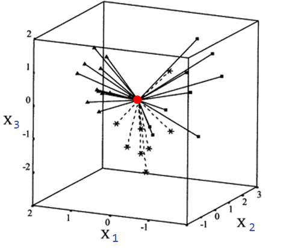
La cantidad \(h_{ii}\) se llama leverage y corresponde al elemento \(i\) de la diagonal de la matriz sombrero \(\boldsymbol{H}\). Los valores de \(h_{ii}\) cumplen lo siguiente:
- siempre están entre \(1/n\) y 1.
- la suma \(\sum h_{ii}\) es igual al número de \(\beta\)’s del modelo (incluyendo \(\beta_0\)).
Si la observación \(i\)-ésima tiene un valor grande de \(h_{ii}\) significa que ella tiene valores inusuales de \(\boldsymbol{x}_i\), mientras que valores pequeños de \(h_{ii}\) significa que la observación se encuentra cerca del centroide de los datos.
Los valores \(h_{ii}\) se pueden obtener de dos formas:
- Construyendo la matriz \(\boldsymbol{H}\).
- Ajustando el modelo de regresión
mody luego usando la funciónhatvalues(mod)olm.influence(mod)sobre el modelo.
¿Para qué se usan los \(h_{ii}\) en la práctica?
En el siguiente apartado se explicará el uso de los \(h_{ii}\).
¿Qué es extrapolación oculta?
Suponga tenemos un modelo de regresión una variable respuesta y dos covariables \(x_1\) y \(x_2\). En la siguiente figura se ilustra los posibles datos desde una vista superior (sin ver los valores de \(y\)). Esa elipse o forma se llama Regressor Variable Hull (RVH) o cascarón de los datos.
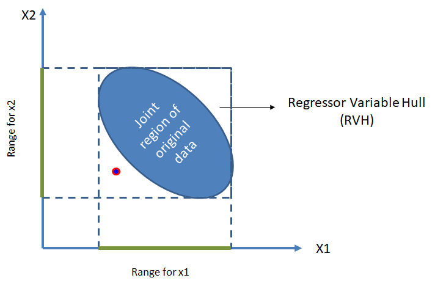
Una vez se tenga el modelo ajustado podríamos usar valores de \(x_1\) y \(x_2\) para estimar la media de \(y\). Lo ideal es usar el modelo para predecir la media de \(y\) con valores de \(x_1\) y \(x_2\) que se encuentren dentro del cascarón.
Si tratamos de estimar la media de \(y\) para valores de las covariables fuera del cascarón, como en el caso del punto rojo, no podemos garantizar que el modelo tenga un buen desempeño debido a que el modelo no se entrenó con ese tipo de ejemplos.
El problema de extrapolación oculta se presenta cuando tratamos de predecir información de \(y\) con covariables fuera del cascarón. La extrapolación oculta es fácil de identificarla cuando sólo se tiene dos covariables, pero, ¿cómo saber si se está haciendo extrapolación oculta cuando se tienen varias covariables. Supongamos que queremos saber si el vector de covariables \(\boldsymbol{x}_0=(1, x_1, x_2, \ldots, x_p)^\top\) está o no dentro del cascarón, dicho de otra manera, ¿se cometería extrapolación oculta usando \(\boldsymbol{x}_0\)?. Los pasos para determinar si \(\boldsymbol{x}_0\) está o no dentro del cascarón son:
- Calcular la matriz \(\boldsymbol{H}\).
- Obtener los valores \(h_{ii}\) de la matriz \(\boldsymbol{H}\).
- Identificar \(h_{max} = max\{h_{11}, h_{22}, \ldots, h_{nn}\}\).
- Calcular \(h_{00} = \boldsymbol{x}_0 (\boldsymbol{X}^\top \boldsymbol{X})^{-1} \boldsymbol{x}_0^\top\).
- Si \(h_{00} > h_{max}\) el punto \(\boldsymbol{x}_0\) está fuera del cascarón y se podría estár cometiendo extrapolación oculta.
Ejemplo
Calcular los valores \(h_{ii}\) para un modelo de regresión y ~ x + z con los siguientes datos.
y <- c(2, 3, 6, 5)
x <- c(3, 5, 6, 7)
z <- c(5, 4, 6, 3)Solución
A seguir se muestran las tres formas para obtener los valores \(h_{ii}\).
# Forma 1
X <- cbind(1, x, z)
H <- X %*% solve(t(X) %*% X) %*% t(X)
H [,1] [,2] [,3] [,4]
[1,] 8.333333e-01 3.333333e-01 -2.609024e-15 -1.666667e-01
[2,] 3.333333e-01 3.333333e-01 -1.665335e-15 3.333333e-01
[3,] -1.387779e-15 -1.332268e-15 1.000000e+00 -1.054712e-15
[4,] -1.666667e-01 3.333333e-01 -1.054712e-15 8.333333e-01diag(H)[1] 0.8333333 0.3333333 1.0000000 0.8333333# Forma 2
mod <- lm(y ~ x + z)
hatvalues(mod) 1 2 3 4
0.8333333 0.3333333 1.0000000 0.8333333 # Forma 3
lm.influence(mod)$hat 1 2 3 4
0.8333333 0.3333333 1.0000000 0.8333333 Reto para el lector
Use la información del ejemplo anterior y determine si la observación con valores de \(x=4\) y \(z=1\) está o no dentro del cascarón de los datos, en otras palabras, determine si se podría cometer extrapolación oculta al usar el modelo ajustado con \(x=4\) y \(z=1\).
Punto de balanceo
Un punto de balanceo es una observación en el espacio de las predictoras pero alejada del resto de la muestra y que puede controlar ciertas propiedades del modelo ajustado.
Este tipo de observaciones posiblemente no afecte los coeficientes de regresión estimados pero sí las estadísticas de resumen como el \(R^2\) y los errores estándar de los coeficientes estimados.
Los puntos de balanceo son detectados mediante el análisis de los elementos de la diagonal principal de la matriz \(\boldsymbol{H}\), los \(h_{ii}\) proporcionan una medida estandarizada de la distancia de la \(i\)-ésima observación al centro del espacio definido por las predictoras.
Se asume que la observación \(i\) es un punto de balanceo si \(h_{ii} > 2p/n\), pero si \(2p/n > 1\), este criterio no funciona pues los \(h_{ii}\) siempre son menores que 1.
Punto atípico (outlier) y punto influyente
Los conceptos de atípico e influyente son diferentes y se definen así:
- Punto atípico (outlier): es una observación que es numéricamente distante del resto de los datos.
- Punto influyente: es una observación que tiene impacto en las estimativas del modelo.
En la siguiente figura se ilustra la diferencia entre los conceptos de atípico e influyente.
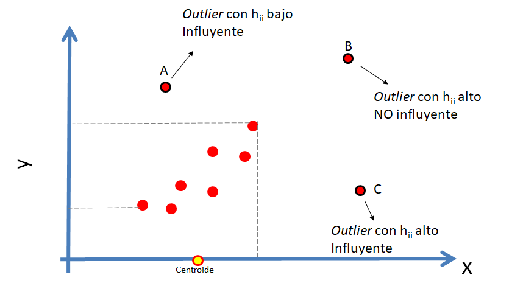
Dos preguntas que surgen al mirar la figura anterior son:
- ¿Cómo saber si un punto es un atípico (outlier)?
- ¿Cómo saber si un punto es influyente?
Para saber si un punto es atípico (outlier) se puede usar la prueba de Bonferroni o los residuales \(d_i\) o \(r_i\), y para saber si un punto es influyente se puede utilizar Distancia de Cook. En las siguientes secciones se mostrará cómo identificar atípicos y puntos influyentes.
Uso de los residuales para detectar atípicos (outliers)
Una forma sencilla de detectar posibles observaciones atípicas (outliers) es usando las siguientes reglas:
- Un \(d_i\) grande, \(|di| > 3\), es indicio de una observación potencialmente atípica.
- Un \(r_i\) grande, \(|ri| > 3\), es indicio de una observación potencialmente atípica.
Prueba de Bonferroni para detectar atípicos (outliers)
El paquete car de Fox et al. (2026) tiene la función outlierTest para realizar una prueba de hipótesis de
- \(H_0:\) la observación \(i\)-ésima NO es un outlier.
- \(H_1:\) la observación \(i\)-ésima SI es un outlier.
La estructura de la función outlierTest se muestra a continuación.
outlierTest(model, cutoff=0.05, n.max=10, order=TRUE, labels=names(rstudent), ...)En la sección 11.3.1 del libro Fox (2015) están los detalles de la prueba, se invita al lector para que los consulte.
Ejemplo
En este ejemplo se usará una base de datos que contiene medidas corporales para un grupo de estudiantes universitarios que vieron el curso de modelos de regresión en el año 2013. Abajo se muestra una figura ilustrativa de los datos.
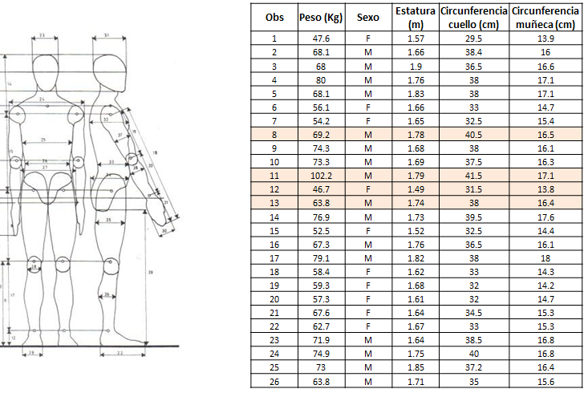
El objetivo es determinar si hay alguna observación que se pueda considerar como outlier cuando se ajusta un modelo de regresión para explicar el peso corporal en función de la estatura, circunferencia del cuello y circunferencia de la muñeca.
Solución
Primero vamos a ajustar el modelo y luego vamos a aplicar la prueba de Bonferroni para detectar outliers.
url <- "https://raw.githubusercontent.com/fhernanb/datos/master/medidas_cuerpo2"
datos <- read.table(file=url, sep="\t", header=TRUE)
mod <- lm(Peso ~ Estatura + circun_cuello + circun_muneca, data=datos)
library(car)
outlierTest(mod, cutoff=Inf, n.max=4) rstudent unadjusted p-value Bonferroni p
11 4.206280 0.00011567 0.006015
52 -2.221747 0.03115300 NA
40 2.146046 0.03706400 NA
28 -2.043770 0.04660300 NAEn la salida de arriba vemos las cuatro observaciones (n.max=4) que tienen los mayores valores de residual estudentizado \(r_i\). La observación ubicada en la línea 11 es la única con un valor-P muy pequeño y por lo tanto hay evidencias para considerar esa observación como un posible outlier.
Es posible dibujar los resultados de la prueba para cada observación usando la función influenceIndexPlot del paquete car. En la siguiente figura se observa que sólo la observacion 11 es identificada como un posible outlier ya que su valor-P es muy pequeño.
influenceIndexPlot(mod, vars="Bonf", las=1)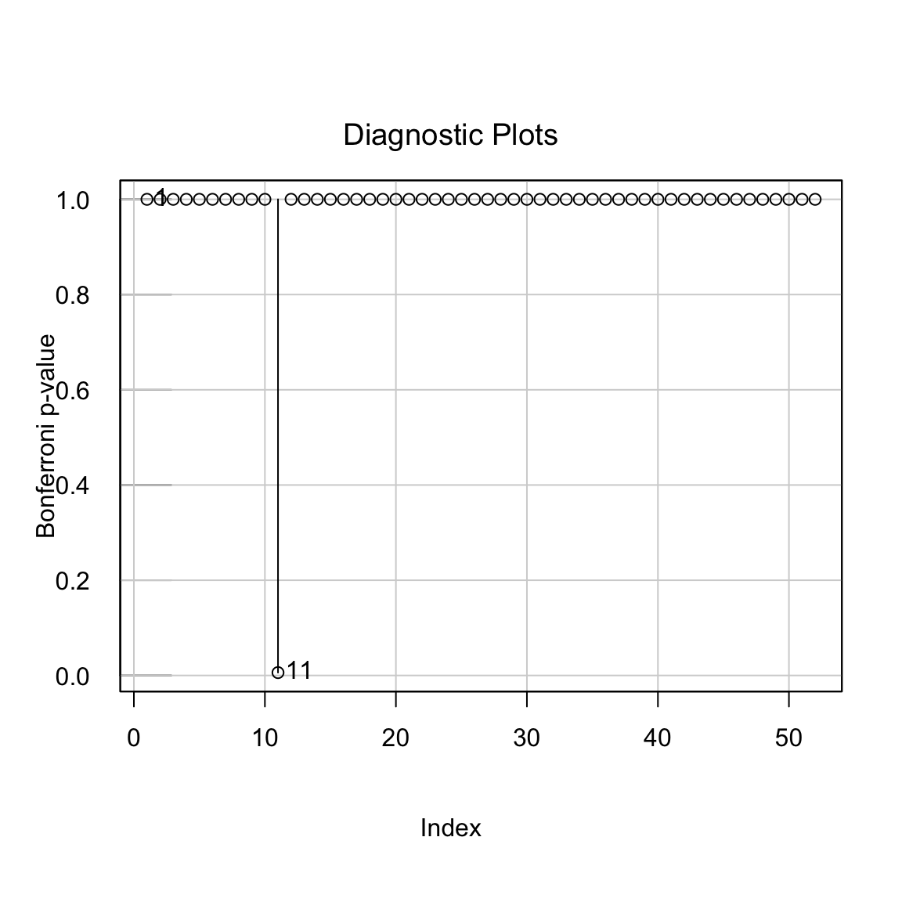
Distancia de Cook
Es una medida de cómo influye la observación \(i\)-ésima sobre la estimación de \(\boldsymbol{\beta}\) al ser retirada del conjunto de datos. Una distancia de Cook grande significa que una observación tiene un peso grande en la estimación de \(\boldsymbol{\beta}\).
\[ D_i = \frac{\sum_{j=1}^{n} (\hat{y}_j - \hat{y}_{j(i)} )^2 }{p \hat{\sigma^2}}, \]
donde la notación \((i)\) significa “sin la observación \(i\)-ésima”, eso quiere decir que \(\hat{y}_{j(i)}\) es la estimación de \(j\)-ésima sin haber tenido en cuenta \(i\)-ésima observación en el ajuste del modelo. La cantidad \(p=k+1\) se refiere a todos los \(\beta\)’s en el modelo (\(\beta_0, \beta_1, \beta_2, \ldots, \beta_k\)).
Una forma sencilla de calcular los valores de la distancia de Cook \(D_i\) es por medio de la expresión.
\[ D_i = \frac{d_i^2}{k+1} \times \frac{h_{ii}}{1-h_{ii}}, \]
donde \(d_i\) corresponde al residual estandarizado.
Otra forma de obtener las distancias de Cook \(D_i\) es ajustando el modelo de interés mod y luego aplicar la función cooks.distance sobre el modelo.
Son puntos influyentes las observaciones que presenten \(D_i>1\).
Ejemplo:
En este ejemplo se usará una base de datos que contiene medidas corporales para un grupo de estudiantes universitarios que vieron el curso de modelos de regresión en el año 2013. Abajo se muestra una figura ilustrativa de los datos.
El objetivo es ajustar un modelo de regresión para explicar el peso promedio en función de la circunferencia de la muñeca, cuello y estatura. Luego de ajustar el modelo se deben identificar los posibles estudiantes influyentes y el efecto de ellos en el modelo.
Solución
Lo primero es cargar los datos en nuestra sesión de R.
url <- "https://raw.githubusercontent.com/fhernanb/datos/master/medidas_cuerpo2"
datos <- read.table(file=url, sep="\t", header=TRUE)
head(datos, n=5) Ano Semestre Peso Sexo Estatura circun_cuello circun_muneca
1 2020 1 47.6 F 1.57 29.5 13.9
2 2020 1 68.1 M 1.66 38.4 16.0
3 2020 1 68.0 M 1.90 36.5 16.6
4 2020 1 80.0 M 1.76 38.0 17.1
5 2020 1 68.1 M 1.83 38.0 17.1Antes de ajustar cualquier modelo es fundamental hacer un análisis descriptivo de los datos. Comenzaremos construyendo un diagrama de dispersión con ggpairs.
library("GGally")
ggpairs(datos[, c("Peso", "Estatura", "circun_cuello", "circun_muneca")])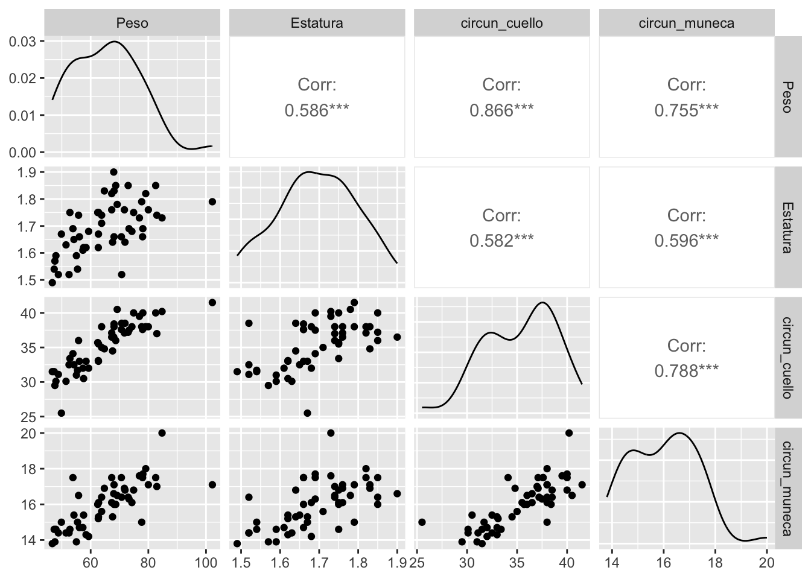
De la figura anterior se observa que hay un punto que se aleja de la nube, es un estudiante que pesa un poco más de 100 kilogramos.
Vamos ahora a ajustar nuestro primer modelo.
mod1 <- lm(Peso ~ Estatura + circun_cuello + circun_muneca, data=datos)
summary(mod1)
Call:
lm(formula = Peso ~ Estatura + circun_cuello + circun_muneca,
data = datos)
Residuals:
Min 1Q Median 3Q Max
-12.277 -3.141 -0.364 2.980 20.065
Coefficients:
Estimate Std. Error t value Pr(>|t|)
(Intercept) -57.109 14.176 -4.029 0.000199 ***
Estatura 10.773 10.492 1.027 0.309674
circun_cuello 2.302 0.387 5.949 3e-07 ***
circun_muneca 1.428 1.048 1.362 0.179546
---
Signif. codes: 0 '***' 0.001 '**' 0.01 '*' 0.05 '.' 0.1 ' ' 1
Residual standard error: 5.822 on 48 degrees of freedom
Multiple R-squared: 0.7692, Adjusted R-squared: 0.7548
F-statistic: 53.32 on 3 and 48 DF, p-value: 2.585e-15Como en la tabla anterior aparecen variables que nos son significativas vamos a realizar una selección de variables usando el paquete mixlm creado por Liland (2025). Vamos a realizar una selección de variables de manera que sólo queden variables significativas con un \(\alpha=0.04\).
mod2 <- mixlm::backward(mod1, alpha=0.04)Backward elimination, alpha-to-remove: 0.04
Full model: Peso ~ Estatura + circun_cuello + circun_muneca
Step RSS AIC R2pred Cp F value Pr(>F)
Estatura 1 1662.6 186.17 0.71720 3.0543 1.0543 0.30967
circun_muneca 2 1761.7 187.18 0.71701 3.9787 2.9212 0.09375 .
---
Signif. codes: 0 '***' 0.001 '**' 0.01 '*' 0.05 '.' 0.1 ' ' 1summary(mod2)
Call:
lm(formula = Peso ~ circun_cuello, data = datos)
Residuals:
Min 1Q Median 3Q Max
-11.4526 -3.7980 -0.5279 3.6603 18.9962
Coefficients:
Estimate Std. Error t value Pr(>|t|)
(Intercept) -37.1552 8.4079 -4.419 5.33e-05 ***
circun_cuello 2.9002 0.2368 12.250 < 2e-16 ***
---
Signif. codes: 0 '***' 0.001 '**' 0.01 '*' 0.05 '.' 0.1 ' ' 1
s: 5.936 on 50 degrees of freedom
Multiple R-squared: 0.7501,
Adjusted R-squared: 0.7451
F-statistic: 150.1 on 1 and 50 DF, p-value: < 2.2e-16 En la siguiente tabla se comparan los modelos 1 y 2 ajustados hasta ahora.
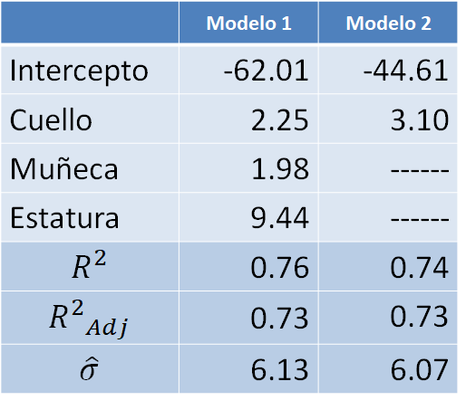
De la tabla anterior podemos destacar lo siguiente:
- El intercepto estimado cambia bastante.
- En el modelo 2 la variable cuello aumenta su efecto.
- El \(R^2\) se mantiene constante.
- La varianza de los errores disminuye, eso significa que el modelo 2 deja menos sin explicar.
Vamos ahora a crear el diagrama de dispersión con el modelo ajustado.
# Para construir el grafico de dispersion
with(datos,
plot(x=circun_cuello, y=Peso, pch=19, las=1,
xlab="Circunferencia cuello (cm)", ylab="Peso (Kg)"))
# Ahora agregamos la linea de tendencia
abline(mod2, lwd=3, col='blue2')
# por ultimo un texto con la ecuacion o modelo ajustado
text(x=34, y=95, expression(hat(Peso) == -44.61 + 3.10 * C.cuello),
col='blue3' )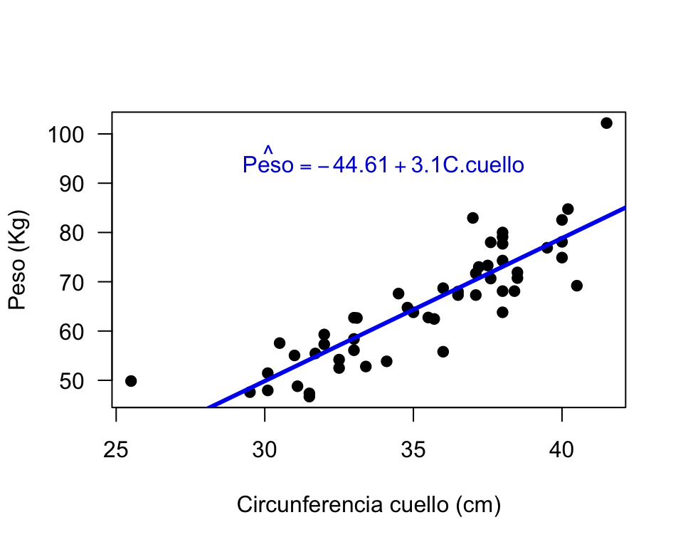
De la figura anterior vemos que hay un estudiante (el de 100 kilos de peso) que está muy alejado de la recta de regresión.
Vamos a calcular las distancias de Cook para las observaciones del modelo 2 así:
cooks.distance(mod2) 1 2 3 4 5 6
7.804662e-04 1.938685e-02 1.563287e-04 2.219833e-02 1.128458e-02 2.524701e-03
7 8 9 10 11 12
4.092417e-03 1.222835e-01 7.151786e-04 1.149054e-03 4.808540e-01 3.722745e-02
13 14 15 16 17 18
3.938290e-02 1.849408e-04 1.029180e-02 6.228690e-04 1.681916e-02 9.700850e-06
19 20 21 22 23 24
7.536443e-03 1.538284e-03 6.643811e-03 7.225225e-03 3.624830e-03 1.331368e-02
25 26 27 28 29 30
1.895684e-03 8.745440e-05 4.836285e-04 2.002813e-02 1.742378e-03 4.885748e-03
31 32 33 34 35 36
6.336181e-04 1.163887e-02 1.529500e-02 5.686460e-04 7.534900e-03 1.800503e-02
37 38 39 40 41 42
1.347941e-02 6.164670e-04 9.932676e-03 5.753702e-02 3.519145e-02 2.780173e-04
43 44 45 46 47 48
5.921498e-03 4.435951e-03 2.649280e-03 2.559527e-02 3.105562e-02 2.775930e-04
49 50 51 52
3.554232e-03 4.082713e-03 6.130210e-01 3.859845e-02 Es mejor representar las distancias de Cook en forma gráfica para identificar los posible puntos influyentes así:
cutoff <- 4 / (26-2-2) # Cota
plot(mod2, which=4, cook.levels=cutoff, las=1)
abline(h=cutoff, lty="dashed", col="dodgerblue2")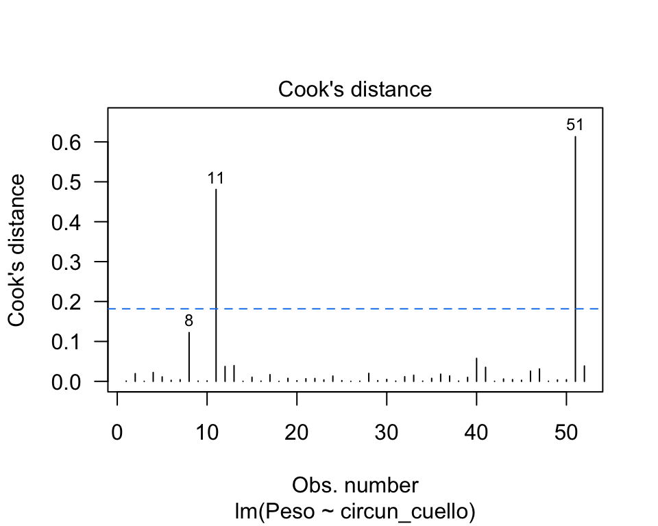
De esta figura es claro que las observaciones 11 y 8 tienen \(D_i\) por encima de la cota y se consideran observaciones influyentes.
Otra forma de dibujar las distancias de Cook es por medio de la función influenceIndexPlot del paquete car.
library(car)
influenceIndexPlot(mod2, vars="Cook")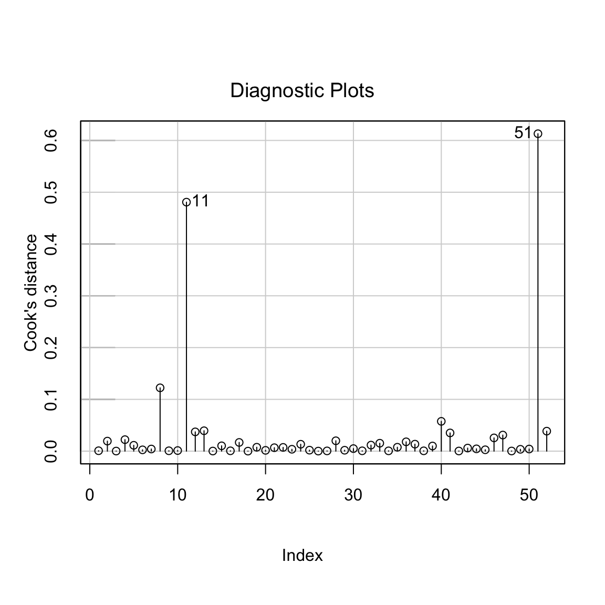
Ahora vamos a revisar los residuales del modelo 2.
par(mfrow=c(2, 2))
plot(mod2, col='deepskyblue4', pch=19)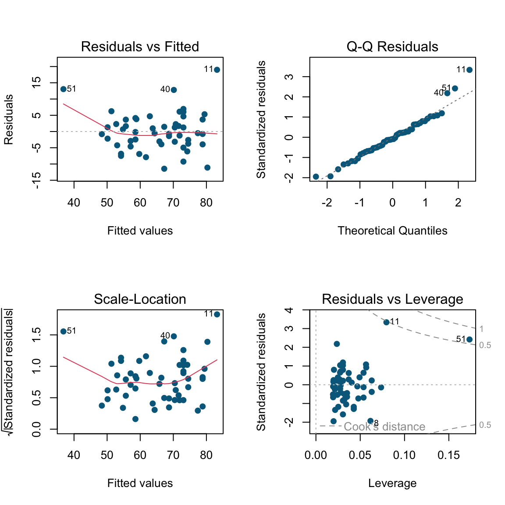
De la anterior figura vemos que las observaciones 8, 11 y 13 son identificadas por tener valores de residuales grandes.
Vamos ahora a identificar las observaciones 8, 11, 12 y 13 en un diagrama de dispersión.
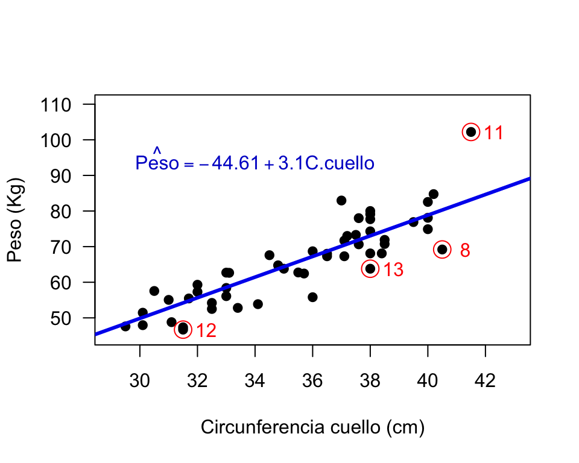
La observación 11 es un hombre que pesa más de 100 kilos y que solo mide 1.79 metros. Las observaciones 8, 12 y 13 son mujeres con las mayores diferencias entre \(y_i\) y \(\hat{y}_i\), para ellas el modelo sobreestima el peso corporal.
En la siguiente tabla se muestran los resultados de ajustar nuevamente el modelo 2 bajo tres situaciones: con todas las observaciones, sin la observación 11 y sin las observaciones 8, 11, 12 y 13. De la tabla vemos que la observación 11 es muy influyente, al sacar esa observación el modelo aumenta su \(R^2\) y disminuye su \(\sigma^2\). De la última columna se observa el mismo comportamiento, \(R^2\) aumenta y disminuye su \(\sigma^2\) al sacar todas las observaciones sospechosas.
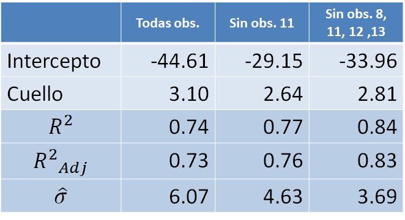
Pero, ¿cuál modelo debo usar como modelo final? ¿El modelo 2, el modelo 2 sin la obs 11 o el modelo 2 sin las obs 8, 11, 12 y 13?
Lo que se recomienda es que el analista se asesore de un experto en el área de aplicación para que juntos estudien esas observaciones sospechosas. Si hay una razón de peso para considerarlas como observaciones atípicas, ellas deben salir del modelo. Si por el contrario, no hay nada raro con las observaciones, ellas deben seguir en el modelo.
Las observaciones sospechosas NO se deben sacar inmediatamente del modelo. Antes se deben estudiar para ver si hay algo raro con ellas, en caso afirmativo se sacan de la base y se ajusta nuevamente el modelo.
Una observación influyente NO es una observación mala en el modelo. Al contrario, ella es una observación clave en el ajuste porque “lidera” la estimación.
Una observación que no es influyente es una observación que estando presente o no, el modelo ajustado no se ve afectado.DFFITS
Es una medida de la influencia de la \(i\)-ésima observación sobre el valor predicho o ajustado, la expresión para calcularla es la siguiente:
\[ DFFITS_i = \frac{\hat{y}_i - \hat{y}_{i(i)}}{\sqrt{s_{(i)}^2 h_{ii}}}. \]
Una observación será influyente si \(|DFFITS| > 2 \sqrt{p/n}\).
La función en R para obtener los \(DFFITS_i\) es dffits.
DFBETAS
Es una medida que indica cuánto cambia el coeficiente de regresión, en unidades de desviación estándar, si se omitiera la \(i\)-ésima observación.
\[ DFBETAS_{i,j} = \frac{\hat{\beta}_j - \hat{\beta}_{j(i)}}{\sqrt{s_{(i)}^2 C_{jj}}}, \]
donde \(C_{jj}\) es \(j\)-ésimo elemento de la diagonal de \((\boldsymbol{X}^\top \boldsymbol{X})^{-1}\).
Una observación será influyente si \(|DFBETAS| > 2 \sqrt{n}\).
La función en R para obtener los \(DFBETAS_{i,j}\) es dfbetas.
Ejemplo
Considere los datos que se muestran a continuación y ajuste un modelo de regresión para explicar \(y\) en función de \(x\). Luego identifique las observaciones influyentes usando las medidas DFFITS y DFBETAS.
x <- c(2, 5, 3, 4, 7)
y <- c(5, 9, 8, 7, 19)Solución
Vamos a crear un diagrama de dispersión para los datos del ejemplo.
plot(x=x, y=y, pch=19, col="tomato", las=1)
text(1:5, x=x-0.1, y=y, cex=0.5)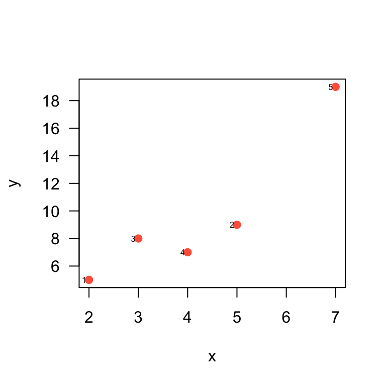
Lo siguiente es ajustar el modelo de regresión de interés.
mod <- lm(y ~ x)Vamos a calcular DFFITS usando la función dffits sobre el modelo ya ajustado.
dffits(mod) 1 2 3 4 5
0.5838725 -0.7757081 0.4112718 -0.4420348 5.8081955 De la salida anterior vemos que la observación 5 es la única que tiene un \(|DFFITS|\) mayor a \(2\sqrt{\frac{p}{n}}=2\sqrt{\frac{2}{5}}=1.26\). Por esa razón podemos considerar a la observación 5 como una observación influyente.
Vamos a calcular DFBETAS usando la función dfbetas sobre el modelo ya ajustado.
dfbetas(mod) (Intercept) x
1 0.56194908 -0.45993179
2 0.03603076 -0.32706727
3 0.34558823 -0.23527935
4 -0.21367111 0.05104178
5 -3.42671836 4.94865731De la salida anterior vemos nuevamente que la observación 5 tiene la mayor influencia sobre \(\hat{\beta}_0\) y sobre \(\hat{\beta}_1\). Como ambos valores de \(|DFBETAS|\) son mayores a \(\frac{2}{\sqrt{n}}=\frac{2}{\sqrt{5}}=0.89\), podemos considerar a la observación 5 como una observación influyente.
Existe otra función llamda dfbeta (sin la letra s), veamos para qué sirve esta función.
dfbeta(mod) (Intercept) x
1 1.93127413 -0.34826255
2 0.09555985 -0.19111969
3 1.16424116 -0.17463617
4 -0.67017865 0.03527256
5 -4.69729730 1.49459459En conclusión,
- La función
dfbetasentrega \(\frac{\hat{\beta}_j - \hat{\beta}_{j(i)}}{\sqrt{s_{(i)}^2 C_{jj}}}\). - La función
dfbetaentrega \(\hat{\beta}_j - \hat{\beta}_{j(i)}\).
Estadística PRESS y \(R^2\) de predicción
Es una medida de lo BIEN que el modelo logra predecir \(\hat{y}\) para nuevas observaciones.
\[ PRESS = \sum_{i=1}^{n} e_{(i)}^2 = \sum_{i=1}^{n} (y_i - \hat{y}_{(i)})^2 = \sum_{i=1}^{n} \left( \frac{e_i}{1-h_{ii}} \right)^2 \]
El \(R^2\) de predicción es una medida del porcentaje de la variabilidad explicada por el modelo para nuevas observaciones. El \(R^2\) de predicción se define en función de la estadística PRESS así:
\[ R^2 \, \text{de predicción} = 1 - \frac{PRESS}{SST} \]
Las funciones mostradas abajo fueron creadas por Tom Hopper y sirven para obtener la estadística PRESS y el \(R^2\) de predicción.
PRESS <- function(linear.model) {
# calculate the predictive residuals
pr <- residuals(linear.model) / (1-lm.influence(linear.model)$hat)
# calculate the PRESS
PRESS <- sum(pr^2)
return(PRESS)
}
pred_r_squared <- function(linear.model) {
#' Use anova() to get the sum of squares for the linear model
lm.anova <- anova(linear.model)
#' Calculate the total sum of squares
tss <- sum(lm.anova$'Sum Sq')
# Calculate the predictive R^2
pred.r.squared <- 1-PRESS(linear.model)/(tss)
return(pred.r.squared)
}Ejemplo
Como ilustración vamos a usar los datos del ejemplo 3.1 del libro de (Montgomery 2006). En el ejemplo 3.1 los autores ajustaron un modelo de regresión lineal múltiple para explicar el Tiempo necesario para que un trabajador haga el mantenimiento y surta una máquina dispensadora de refrescos en función de las variables Número de Cajas y Distancia.
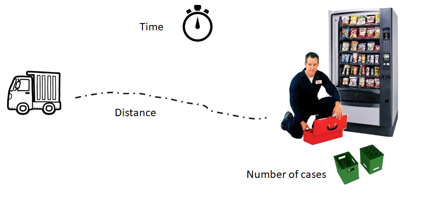
¿Cuál es el valor de la estadística PRESS y del \(R^2\) de predicción?
Solución
Los datos del ejemplo están disponibles en el paquete MPV (por los apellidos de los autores). A continuación el código para cargar los datos y ajustar el modelo de interés.
require(MPV)
colnames(softdrink) <- c('tiempo', 'cantidad', 'distancia')
mod <- lm(tiempo ~ cantidad + distancia, data=softdrink)A continuación se muestran las dos medidas de interés.
PRESS(mod)[1] 459.0393pred_r_squared(mod)[1] 0.9206438De la salida anterior se observa que el \(R^2\) de predicción toma un valor de 0.9206, esto indica que el modelo mod tiene una buena capacidad de predicción para nuevas observaciones.
Valores de corte para diagnósticos
Fox (2015) en la sección 11.5 hace una recopilación de los puntos de corte que se podrían usar para identificar observaciones con alguna anomalía al ajustar un modelo de regresión. En el siguiente listado se muestran esos puntos de corte pero se recomienda al lector para que revise Fox (2015) y conozca unas recomendaciones adicionales sobre los puntos de corte.
- Observaciones con valores de \(h_{ii}\) que excedan dos veces el valor \(\bar{h} = (k+1)/n\) podrían ser observaciones atípicas o outliers. Este punto de corte se obtiene como una aproximación para identificar el 5% de las observaciones más extremas si las \(X\)’s se distribuyen normal multivariada con \(k\) y \(n-k-1\) grandes (\(k\) se refiere al número de \(\beta\)’s diferentes al intercepto).
- Como los residuales estandarizados \(d_i\), tienen media cero y varianza aproximadamente unitaria, un residual estandarizado grande, \(|d_i| > 3\), indica que se trata de un valor atípico potencial.
- Como los residuales studentizados \(r_i\) tienen distribución \(t\)-student, es decir, \(t_{n-k-2}\), se podrían considerar como posibles residual atípico aquel cuyo valor cumpla \(|r_i| > 2\).
- Una observación con un residual PRESS grande se puede considerar como una observación influyente.
- Una observación se puede considerar como influyente si su distancia de Cook cumple que \(D_i > 4/(n-k-1)\), donde \(k\) se refiere al número de \(\beta\)’s diferentes al intercepto.
- Una observación se puede considerar como influyente si valor de DFFITS cumple que \(|DFFITS_i| > 2 \sqrt{\frac{k+1}{n-k-1}}\).